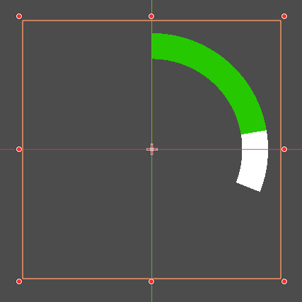
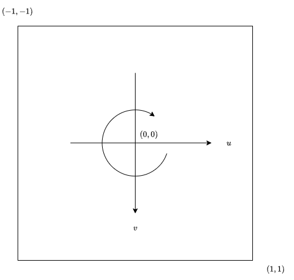
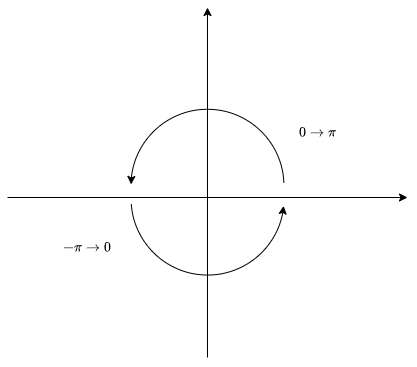
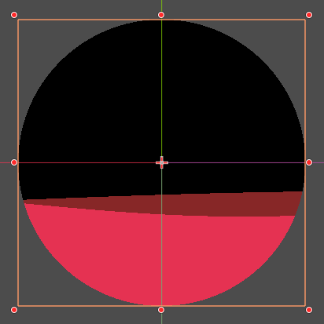

01UV坐标操控
目录
07三角函数效果
教程中用了大量篇幅来讲三角函数部分，并且进行了很多实操练习。在前面部分，也已经记录了三角函数部分的引用，详细可以见02护盾效果
理解三角函数主要有几个部分。
- 一是制作圆形，角度运动相关效果
- 而是制作三角函数波动效果
圆形进度条效果
先回顾一下基础的三角函数运算。 三角函数一个重要部分就是由UV计算区域角度，由角度控制可以制作出扇形区间。例如如下效果：

为了使用三角函数做中心扇形，第一步先要转换UV成中心UV，即
void fragment() {
vec2 center_uv = 2.0*UV-1.0;
}此时坐标系会转为如下坐标系

注意此时中心点为$(0,0)$。使用$a=\arctan(y/x)$便可以计算出点距离中心点沿着$x$正方向夹角。在数学上$\arctan$函数的值域是$(-\frac{\pi}{2},\frac{\pi}{2})$。shader函数表示为atan(y,x)，为了方便，函数会根据$y$的符号来扩展了值域范围到$(-\pi,\pi)$。
其范围映射值可以简单用下图来表示：

- 当$y\gt 0$，给出$0\to\pi$范围。
- 当$y\lt 0$，给出$-\pi\to 0$范围。
- 当$x\lt 0,y=0$时给出$\pi$，当$x\gt 0,y=0$时给出$0$。
剩下就简单了，为了绘制圆环效果。只要用三角函数筛选出角度范围，并且用到中心的距离来裁剪即可。
流动波纹效果
流动波纹效果目标是一个简易风格药水瓶波动效果。其效果如下，其效果其实比较偏美术韵味，用$\sin,\cos$函数去模拟一个波纹效果。

制作方式也很简单易懂。我们需要制作两条波纹效果，把采样叠加即可。
这里要做的是分区波纹下方，这个可以通过如下方式来筛选出来
void fragment() {
float wave_front = step(sin(UV.x),UV.y)
}如果想让其随时间产生波动，可以添加TIME参数来产生动画效果。同时通过调整函数参数来修改这个波纹的波动效果。
例如如下代码
void fragment() {
float wave_front = step(sin(UV.x*wave_width+wave_speed*TIME)*wave_amplitude*cos(TIME)+wave_height,UV.y);
float wave_back = step(sin(UV.x+wave_speed*TIME+wave_offset)*wave_amplitude*cos(2.0*TIME)+wave_height-height_offset,UV.y);
}wave_width可以调整频率，波形的宽度wave_speed可以调整波的流动速度wave_offset可以调整波的相位，就是两个波之间的距离wave_amplitude可以调整振幅，就是波形的高度wave_height可以调整波形的位置高度
最后只需要将需要的形状贴在一起即可产生一个类似于药水瓶波动的效果。